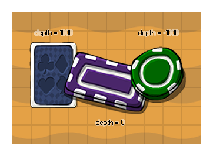

Lorsque vous créez un objet, vous pouvez lui attribuer une profondeur initiale qui définit comment les occurrences de cet objet seront dessinées dans la pièce lorsque le jeu est joué et cette variable peut être utilisée pour obtenir et modifier cette valeur de profondeur pendant que le jeu est fonctionnement. Vous n'avez normalement pas besoin d'utiliser cette variable, car vous devez définir des instances à ajouter aux couches discrètes, qui sont à leur tour définies sur une profondeur spécifique, mais il se peut que vous souhaitiez modifier la profondeur d'une instance à l'aide de cette valeur, Dans ce cas, une "couche temporaire" sera créée spécifiquement pour l'instance à la profondeur donnée. Notez que quand aucune instance n'est à la même profondeur alors cette couche temporaire sera retirée de la mémoire (contrairement aux couches régulières qui resteront même si elles n'ont rien sur elles).
IMPORTANT! Lorsque vous modifiez le depth variable et GameMaker STudio 2 gère les couches, l'intégré layer variable renvoie -1 et non l'ID de couche, car les couches gérées ne peuvent pas être manipulées via le code.
Dans GameMaker Studio 2 plus la valeur de profondeur d'une occurrence est basse, plus cette occurrence sera proche de la caméra, tandis qu'une valeur de profondeur plus élevée signifie que l'occurrence sera dessinée plus loin de la caméra, soit: -1000 est dessiné au-dessus de -100, qui est dessiné au-dessus de 0, qui est dessiné au-dessus de 100, qui est dessiné sur le dessus de 1000. Notez que les occurrences d'un objet ayant la même profondeur peuvent être dessinées au - dessus ou en dessous l'une de l'autre, même si elles semblent être placées les unes sur les autres dans l'éditeur de la pièce. Si vous voulez garantir que quelque chose est dessiné sur ou sous tout le reste, vous devez toujours définir la profondeur (ou couche) explicitement.
Remarque: vous ne pouvez pas définir la profondeur d'une instance dans son événement de dessin (tous les autres événements sont très bien).
depth;
Real
if y != yprevious
{
depth = -y;
}
Le code ci-dessus va vérifier pour voir si la position y a changé et si elle a alors la profondeur sera également définie pour lui correspondre.